16. Inventories
An Inventory is a collection of hosts against which jobs may be launched, the same as an Ansible inventory file. Inventories are divided into groups and these groups contain the actual hosts. Hosts and groups can be entered manually in automation controller or imported from an inventory source, such as a project or a supported cloud provider.
Note
If you have a custom dynamic inventory script, or a cloud provider that is not yet supported natively in automation controller, you can also import that into automation controller. Refer to Inventory File Importing in the Administration Guide.
Open Automation Execution > Infrastructure > Inventories. The list shows the inventories you can see; it can be searched and sorted, and its columns can be chosen with the column management button.
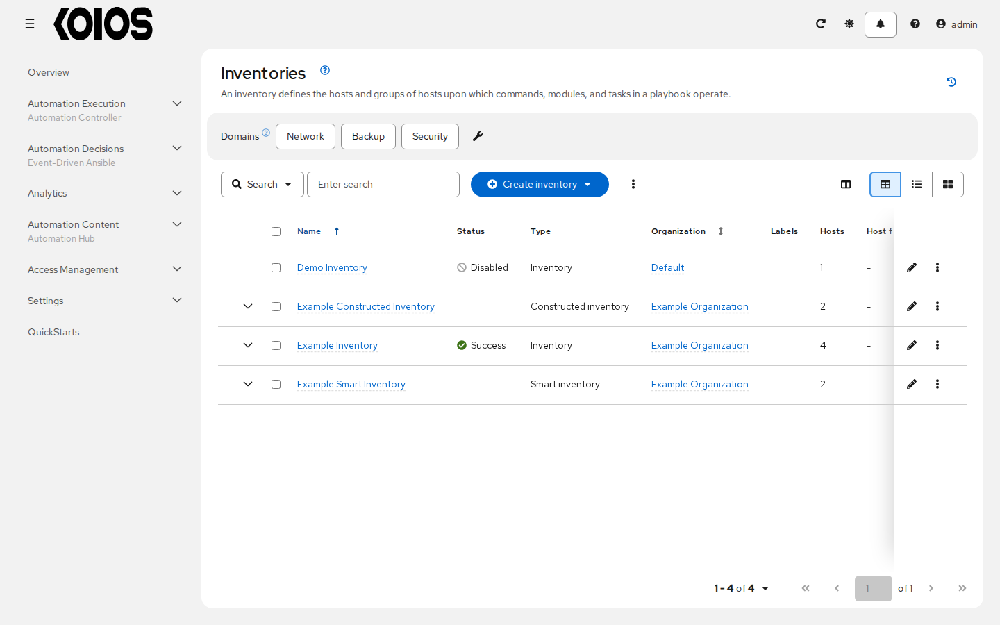
The list includes:
Name: The inventory name. Click it to open the inventory and its tabs.
Status: The result of the last synchronization of the inventory sources: Success, Failed, a running state, or Disabled when the inventory has no inventory source. Smart and constructed inventories show no status here.
Type: Inventory (a standard inventory), Smart inventory or Constructed inventory.
Organization: The organization to which the inventory belongs.
Labels, Hosts, Host failures and other counters.
Actions: Edit inventory (pencil icon) and, in the menu of each row, Duplicate inventory, Sync inventory (when it has sources) and Delete inventory.
16.1. Smart Inventories
A Smart Inventory is a collection of hosts defined by a stored search that can be viewed like a standard inventory and made to be easily used with job runs. Organization administrators have admin permission to inventories in their organization and can create Smart Inventories. A Smart Inventory is identified by kind=smart.
Note
Smart inventories are deprecated and will be removed in a future release. Users are encouraged to consider moving to constructed inventory for enhancements and replacement.
The Inventory model has the following fields that are blank by default but are set accordingly for Smart Inventories:
kindis set tosmartfor Smart Inventorieshost_filteris set ANDkindis set tosmartfor Smart Inventories.
The host model has a related endpoint, smart_inventories that identifies a set of all the Smart Inventory a host is associated with. The membership table is updated every time a job runs against a smart inventory.
Note
To update the memberships more frequently, set AWX_REBUILD_SMART_MEMBERSHIP to True (default is False) as an extra setting of automation controller (see Deployment-managed settings). This will update memberships in the following events:
a new host is added
an existing host is modified (updated or deleted)
a new Smart Inventory is added
an existing Smart Inventory is modified (updated or deleted)
A Smart Inventory has no groups and no sources of its own: its Hosts tab shows the hosts that match the filter, read-only. You cannot create hosts from a Smart Inventory host endpoint (/inventories/N/hosts/) as with a normal inventory. The administrator of a Smart Inventory has permission to edit fields such as the name, description, variables, and the ability to delete, but does not have the permission to modify the host_filter, because that will affect which hosts (that have a primary membership inside another inventory) are included in the smart inventory. Note, host_filter only applies to hosts inside of inventories inside of the Smart Inventory’s organization.
In order to modify the host_filter, you need an inventory administration role on the inventory’s organization: Organization Admin or Organization Inventory Admin. Both already have implicit “admin” access to all inventories inside the organization, therefore, this does not convey any permissions they did not already possess.
Administrators of the Smart Inventory can grant other users (who are not also admins of your organization) roles such as “use” or “ad hoc” on the smart inventory, and these will allow the actions indicated by the role, just like other standard inventories. However, this will not give them any special permissions to hosts (which live in a different inventory). It will not allow them direct read permission to hosts, although they can still view the hosts in the Hosts tab of the smart inventory.
Hosts associated with the Smart Inventory are manifested at view time. If the results of a Smart Inventory contains more than one host with identical hostnames, only one of the matching hosts will be included as part of the Smart Inventory, ordered by Host ID.
16.1.1. Smart Host Filter
The Smart host filter populates the hosts of a smart inventory with a search. This feature uses the capability of the fact searching feature.
Facts generated by an Ansible playbook during a Job Template run are stored by automation controller into the database whenever use_fact_cache=True is set per-Job Template. New facts are merged with existing facts and are per-host. These stored facts can be used to filter hosts via the /api/controller/v2/hosts endpoint, using the GET query parameter host_filter For example: /api/controller/v2/hosts?host_filter=ansible_facts__ansible_processor_vcpus=8
The host_filter parameter allows for:
grouping via ()
use of the boolean
andandoroperators__to reference related fields in relational fields__on ansible_facts to separate keys in a JSON key path[]to denote a json array in the path specification""in the value when spaces are wanted in the value“classic” Django queries embedded in the
host_filter
Examples:
/api/controller/v2/hosts/?host_filter=name=localhost
/api/controller/v2/hosts/?host_filter=ansible_facts__ansible_date_time__weekday_number="3"
/api/controller/v2/hosts/?host_filter=ansible_facts__ansible_processor[]="GenuineIntel"
/api/controller/v2/hosts/?host_filter=ansible_facts__ansible_lo__ipv6[]__scope="host"
/api/controller/v2/hosts/?host_filter=ansible_facts__ansible_processor_vcpus=8
/api/controller/v2/hosts/?host_filter=ansible_facts__ansible_env__PYTHONUNBUFFERED="true"
/api/controller/v2/hosts/?host_filter=(name=localhost or name=database) and (groups__name=east or groups__name="west coast")
You can search host_filter by host name, group name, and Ansible facts. The Smart host filter field of the form takes the same expression as the host_filter parameter, without the endpoint. For example:
name__icontains=web
groups__name=groupA
ansible_facts__ansible_fips=false
If a search term in host_filter is of string type, to make the value a number (e.g. 2.66), or a JSON keyword (e.g. null, true or false) valid, add double quotations around the value to prevent automation controller from mistakenly parsing it as a non-string:
host_filter=ansible_facts__packages__dnsmasq[]__version="2.66"
16.1.2. Define host filter with ansible_facts
To use ansible_facts to define the host filter when creating Smart Inventories, perform the following steps:
In the Inventories list, click Create inventory > Create smart inventory.
Enter the name and organization, and type the filter in the Smart host filter field. For example, to select the hosts whose processor is from Intel, enter
ansible_facts__ansible_processor[]="GenuineIntel"(no extra spaces). The example below selects the hosts whose name containsweb.
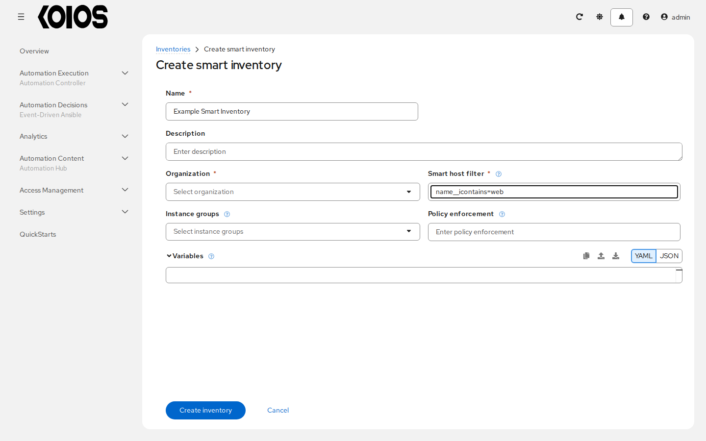
Click Create inventory.
The Details tab of the new Smart Inventory opens and displays the filter in the Smart host filter field. The Hosts tab lists the matching hosts.
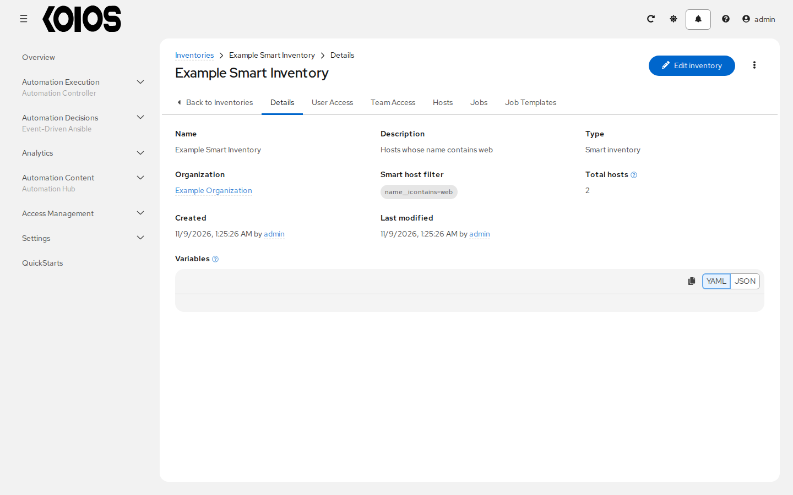
To change the filter, click Edit inventory.
16.2. Constructed Inventories
As a platform user, this feature allows creation of a new inventory (called a constructed inventory) from a list of input inventories. The constructed inventory contains copies of hosts and groups in its input inventories, allowing jobs to target groups of servers across multiple inventories. Groups and hostvars can be added to the inventory content, and hosts can be filtered to limit the size of the constructed inventory. Constructed inventories address some limitations of the Smart Inventories host filtering model and makes use of the Ansible core constructed inventory model.
The key factors that distinguish a constructed inventory from a Smart Inventory are:
the normal Ansible hostvars namespace is available
they provide groups
Smart inventories take a host_filter as input and create a resultant inventory with hosts from inventories in its organization. Constructed inventories take source_vars and limit as inputs and transform its input_inventories into a new inventory, complete with groups. Groups (existing or constructed) can then be referenced in the limit field to reduce the number of hosts produced.
For instance, you can construct groups based on these host properties:
RHEL major/minor versions
Windows hosts
Cloud based instances tagged in a certain region
other
These examples described in the subsequent sections are organized by the structure of the input inventories.
16.2.1. Group name and variables filtering
Two different conditions are demonstrated here to describe the input inventory content:
First condition is that the
statevariable defined on the host is set toshutdownSecond condition is membership in a group with
account_aliasvariable set toproduct_dev
The variable account_alias is used to demonstrate a group variable. In this hypothetical, each account has its own group, with group variables giving metadata about those accounts, which is common in cloud-source inventories. These variables are shown in the general hostvars namespace in Ansible, which is why it has no special treatment in source_vars.
The hosts inside the input inventory will fit one condition, the other condition, neither, or both. This results in four hosts total for demonstration purposes.
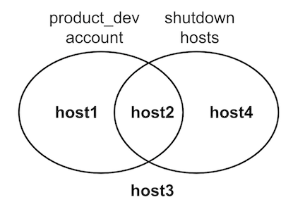
This folder defines the inventory as an ini type named two_conditions.ini:
[account_1234]
host1
host2 state=shutdown
[account_4321]
host3
host4 state=shutdown
[account_1234:vars]
account_alias=product_dev
[account_4321:vars]
account_alias=sustaining
The goal here is to return only shutdown hosts that are present in the group with the account_alias variable of product_dev.
There are two approaches to this, both shown in yaml format. The first one suggested is recommended.
Construct 2 groups, limit to intersection
source_vars:
plugin: constructed
strict: true
groups:
is_shutdown: state | default("running") == "shutdown"
product_dev: account_alias == "product_dev"
limit: is_shutdown:&product_dev
This constructed inventory input creates a group for both of the categories and uses the limit (host pattern) to only return hosts that are in the intersection of those two groups, which is documented in host patterns in Ansible.
Also, when a variable may or may not be defined (depending on the host), you can give a default, like with | default("running") if you know what value it should have when it is not defined. This helps with debugging, as described in the Debugging tips section.
Construct 1 group, limit to group
source_vars:
plugin: constructed
strict: true
groups:
shutdown_in_product_dev: state | default("running") == "shutdown" and account_alias == "product_dev"
limit: shutdown_in_product_dev
This input creates one group that only includes hosts that match both criteria. The limit is then just the group name by itself, returning just host2, same as the previous approach.
16.2.1.1. Debugging tips
It is very important to set the strict parameter to True so that you can debug problems with your templates. If the template fails to render, you will get an error in the associated inventory update for that constructed inventory.
When encountering errors, increase verbosity to get more details.
Giving a default, like with | default("running") is a generic use of Jinja2 templates in Ansible. Doing this avoids errors from the particular template when you set strict: true. You could also set strict: false, and allow the template to produce an error, which results in the host not getting included in that group. However, doing so makes it difficult to debug issues in the future if your templates continue to grow in complexity.
However, you may still have to debug the intended function of the templates if they are not producing the expected inventory content. For example, if a groups group has a complex filter (like shutdown_in_product_dev) but does not contain any hosts in the resultant constructed inventory, then use the compose parameter to help debug. Like this:
source_vars:
plugin: constructed
strict: true
groups:
shutdown_in_product_dev: state | default("running") == "shutdown" and account_alias == "product_dev"
compose:
resolved_state: state | default("running")
is_in_product_dev: account_alias == "product_dev"
limit: ``
Running with a blank limit will return all hosts. You can use this to inspect specific variables on specific hosts, giving insight into where problems in the groups lie.
16.2.2. Nested groups
The inventory contents of two groups where one is a child of the other is used here to demonstrate nested groups. The child group has a host inside of it, and the parent group has a variable defined. Due to how Ansible core works, the variable of the parent group will be available in the namespace as a playbook is running, and can be used for filtering.
Define the inventory file in a yaml format named nested.yml:
all:
children:
groupA:
vars:
filter_var: filter_val
children:
groupB:
hosts:
host1: {}
ungrouped:
hosts:
host2: {}
The goal here is to filter hosts based on indirect membership in a group (because host1 is in groupB, it is also in groupA).
16.2.2.1. Filter on nested group names
Use the following yaml format to filter on nested group names:
source_vars:
plugin: constructed
limit: groupA
16.2.2.2. Filter on nested group property
This shows how you can filter on a group variable, even if the host is indirectly a member of that group.
In the inventory contents, you can see that host2 is not expected to have the variable filter_var defined, because it is not in any of the groups. Because of using strict: true, use a default value so that hosts without that variable defined. With this, host2, will return False from the expression, as opposed to producing an error. host1 will inherit the variable from its groups, and will be returned.
source_vars:
plugin: constructed
strict: true
groups:
filter_var_is_filter_val: filter_var | default("") == "filter_val"
limit: filter_var_is_filter_val
16.2.3. Ansible facts
To create an inventory with Ansible facts, you need to run a playbook against the inventory that has gather_facts: true. The actual facts will differ system-to-system. The following example problems exemplify some example cases and are not intended to address all known scenarios.
16.2.3.1. Filter on environment variables
An example problem is demonstrated here that involves filtering on env vars using the yaml format:
source_vars:
plugin: constructed
strict: true
groups:
hosts_using_xterm: ansible_env.TERM == "xterm"
limit: hosts_using_xterm
16.2.3.2. Filter hosts by processor type
An example problem is demonstrated here that involves filtering hosts by processor type (Intel) using the yaml format:
source_vars:
plugin: constructed
strict: true
groups:
intel_hosts: "GenuineIntel" in ansible_processor
limit: intel_hosts
Note
Like with Smart Inventories, hosts in constructed inventories are not counted against an organization’s host limit, because they reference the original inventory host. Also, hosts that are disabled in the original inventories will not be included in the constructed inventory.
An inventory update ran via ansible-inventory creates the constructed inventory contents. This is always configured to update-on-launch before a job, but you can still select a cache timeout value in case this takes too long.
When creating a constructed inventory, the API enforces that it always has one inventory source associated with it. All inventory updates have an associated inventory source, and the fields needed for constructed inventory (source_vars and limit) are fields already present on the inventory source model.
16.2.4. User interface
Follow the procedure described in the subsequent section, Add a new inventory to create a new constructed inventory. A constructed inventory has no Sources tab: click Sync inventory to run the update that builds its hosts and groups.
Example of a constructed inventory details view:
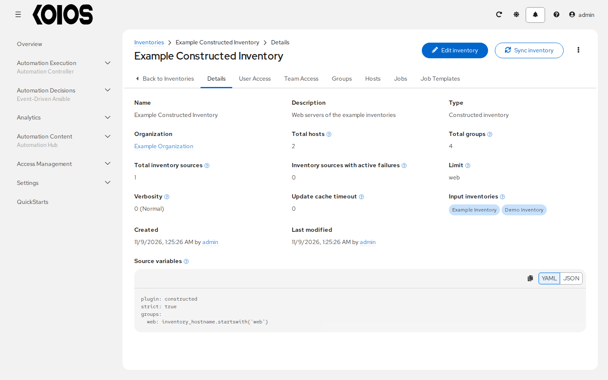
16.3. Inventory Plugins
Inventory updates use dynamically-generated YAML files which are parsed by their respective inventory plugin. Users can provide the new style inventory plugin config directly to automation controller via the inventory source source_vars for all the following inventory sources:
Additional cloud and virtualization sources: Google Compute Engine, Microsoft Azure Resource Manager, VMware vCenter, VMware ESXi, Red Hat Satellite 6, OpenStack, Red Hat Virtualization and Red Hat Insights
Newly created configurations for inventory sources will contain the default plugin configuration values. If you want your newly created inventory sources to match the output of legacy sources, you must apply a specific set of configuration values for that source. To ensure backward compatibility, automation controller uses “templates” for each of these sources to force the output of inventory plugins into the legacy format. Refer to Supported Inventory Plugin Templates section of this guide for each source and their respective templates to help you migrate to the new style inventory plugin output.
source_vars that contain plugin: foo.bar.baz as a top-level key will be replaced with the appropriate fully-qualified inventory plugin name at runtime based on the InventorySource source. For example, if ec2 is selected for the InventorySource then, at run-time, plugin will be set to amazon.aws.aws_ec2.
16.4. Add a new inventory
Adding a new inventory involves several components:
To create a new standard inventory, Smart inventory or constructed inventory:
In the Inventories list, click Create inventory and select Create inventory, Create smart inventory or Create constructed inventory.
The title of the form shows the type of inventory.
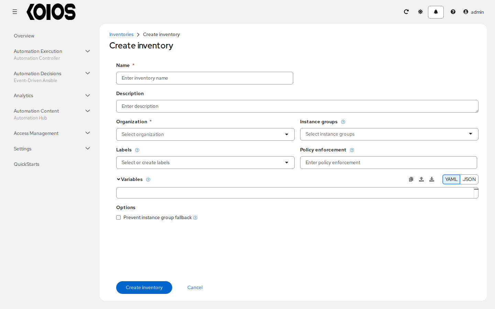
Enter the appropriate details into the following fields:
Name: Enter a name appropriate for this inventory.
Description: Enter an arbitrary description as appropriate (optional).
Organization: Required. Choose among the available organizations.
Smart host filter: (Only applicable to Smart Inventories) Required. Enter the filter that selects the hosts of this inventory, for example
name__icontains=web. Whether a filter is case-sensitive depends on its lookup:name=webandname__contains=webare,name__icontains=webis not. Refer to the Smart Host Filter section for more information.Instance groups: Choose the instance group(s) for this inventory to run on. If the list is extensive, type in the field to narrow the options. You may select multiple instance groups; they are used in the order selected.
Input inventories: (Only applicable to constructed inventories) Required. Select the inventories whose hosts and groups the constructed inventory takes. Empty groups from input inventories will be copied into the constructed inventory.
Cache timeout (seconds): (Only applicable to constructed inventories) Optionally set for how many seconds the last update of the constructed inventory can be reused when a job is launched, before another update runs.
Verbosity: (Only applicable to constructed inventories) Control the level of output Ansible produces as the playbook executes related to inventory sources associated with constructed inventories. Choose the verbosity from Normal to various Verbose or Debug settings. This only appears in the “details” report view. Verbose logging includes the output of all commands. Debug logging is exceedingly verbose and includes information on SSH operations that can be useful in certain support instances. Most users do not need to see debug mode output.
Limit: (Only applicable to constructed inventories) Restricts the number of returned hosts for the inventory source associated with the constructed inventory. You can paste a group name into the limit field to only include hosts in that group. See Source vars for more detail.
Labels: (Not applicable to Smart Inventories) Optionally supply labels that describe this inventory, so they can be used to group and filter inventories and jobs.
Policy enforcement: A policy to evaluate before the jobs that use this inventory run, when policy enforcement is configured (optional).
Variables (Source variables for constructed inventories):
Variables: Variable definitions and values to be applied to all hosts in this inventory. Enter variables using either JSON or YAML syntax. Use the YAML and JSON buttons to toggle between the two.
Source variables for constructed inventories: Required, with the
pluginkey. It creates groups, specifically under thegroupskey of the data. It accepts Jinja2 template syntax, renders it for every host, makes aTrue/Falseevaluation, and includes the host in the group (from key of the entry) if the result isTrue. This is particularly useful because you can paste that group name into the limit field to only include hosts in that group. See an example here.
Options: Check Prevent instance group fallback (only applicable to standard inventories) to allow only the instance groups listed in the Instance groups field above to execute the job. If unchecked, all available instances in the execution pool will be used based on the hierarchy described in Control Where a Job Runs. Click the help icon next to the option for additional information.
Note
Set the prevent_instance_group_fallback option for Smart Inventories through the API.
Click Create inventory when done.
The Details tab of the new inventory opens. The tabs of an inventory depend on its type: a standard inventory has Details, User Access, Team Access, Groups, Hosts, Sources, Jobs and Job Templates; a smart inventory has no Groups or Sources, and a constructed inventory has no Sources.
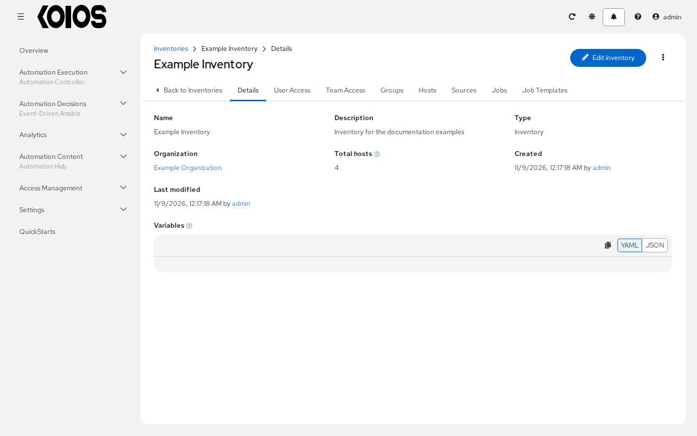
After saving the new inventory, you can proceed with configuring permissions, groups, hosts, sources, and view completed jobs, if applicable to the type of inventory. For more instructions, refer to the subsequent sections.
16.4.1. Add permissions
The User Access and Team Access tabs list the users and teams with roles on the inventory; Assign users and Assign teams give roles to more of them. Users must exist first; see Users. The organization roles also apply to the inventories of the organization.
16.4.2. Add groups
Inventories are divided into groups, which may contain hosts and other groups. Groups are only applicable to standard inventories and cannot be configured directly in a Smart Inventory. From the Groups tab of a standard inventory you can:
Create a new group
Run a command on the selected groups (see Running Ad Hoc Commands)
Edit or delete groups
Note
Inventory sources are not associated with groups. Spawned groups are top-level and may still have child groups, and all of these spawned groups may have hosts.
To create a new group for an inventory:
In the Groups tab, click Create group to open the Create group form.
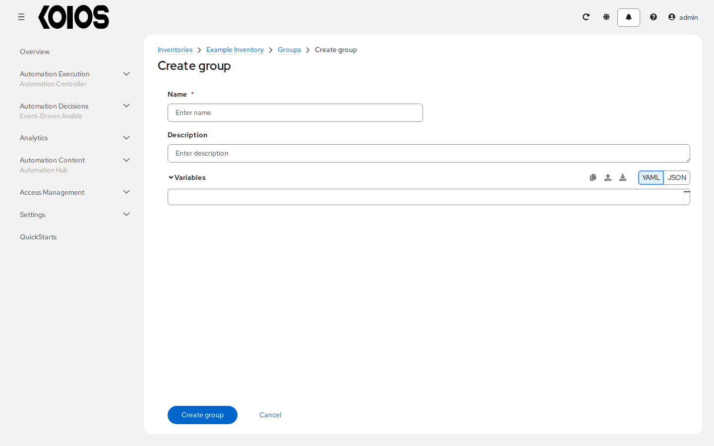
Enter the appropriate details into the required and optional fields:
Name: Required
Description: Enter an arbitrary description as appropriate (optional)
Variables: Enter definitions and values to be applied to all hosts in this group. Enter variables using either JSON or YAML syntax. Use the YAML and JSON buttons to toggle between the two.
When done, click Create group.
16.4.2.1. Add groups within groups
To add groups within groups:
Click the name of the group in the Groups tab and open its Related Groups tab.
Click Add group, and select Add existing group to choose a group that already exists in the inventory, or Create group to create a new one.
If creating a new group, enter the appropriate details into the required and optional fields:
Name: Required
Description: Enter an arbitrary description as appropriate (optional)
Variables: Enter definitions and values to be applied to all hosts in this group. Enter variables using either JSON or YAML syntax. Use the YAML and JSON buttons to toggle between the two.
When done, click Create group.
The new group displays in the Related Groups tab of the group that it was created for. In the example below, webservers is a child group of production.
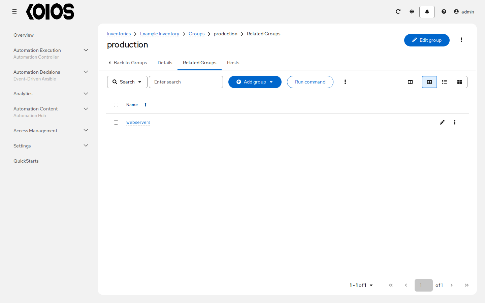
If you chose to add an existing group, the available groups appear in the Select groups window. Select one or more and click Add groups.
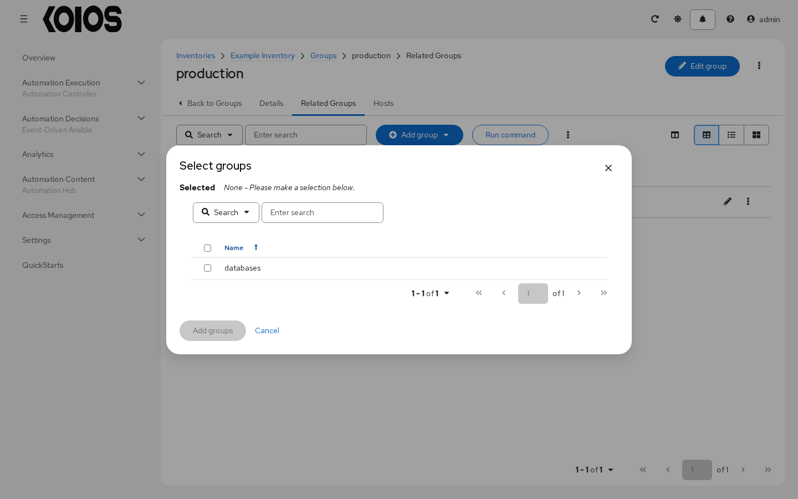
To remove a child group from a group without deleting it, select it in the Related Groups tab and click Disassociate groups.
5. To configure additional groups and hosts under the subgroup, click on the name of the subgroup from the list of groups and repeat the same steps described in this section.
16.4.2.2. View or edit inventory groups
The Groups tab lists all the groups of the inventory. Click a group to see its Details, Related Groups and Hosts, and click Edit group to change it.
When you delete a group that has child groups or hosts, a confirmation dialog asks what to do with them:
Delete all groups and hosts: deletes the group and its descendants, except the groups and hosts that also belong to other groups, which are kept there.
Promote child groups and hosts: keeps them and moves them to the parent groups of the deleted group; if it had no parent groups, they become top-level groups and hosts of the inventory.
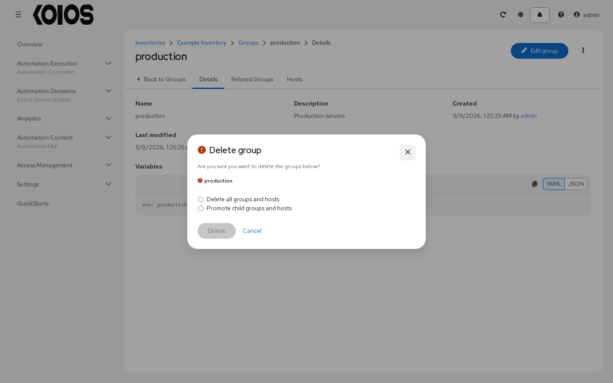
16.4.3. Add hosts
You can configure hosts for the inventory as well as for groups and groups within groups. To configure hosts:
Open the Hosts tab of the inventory, or the Hosts tab of a group.
In the Hosts tab of the inventory, click Create host. In the Hosts tab of a group, click Add host and select Add existing host to add a host that already exists in the inventory, or Create host to create a new one.
If creating a new host, enter the appropriate details into the required and optional fields:
Name: Required
Description: Enter an arbitrary description as appropriate (optional)
Enabled: Whether the host is included when running jobs. You can also enable or disable a host with the switch of its row in the list.
Variables: Enter definitions and values to be applied to this host. Enter variables using either JSON or YAML syntax. Use the YAML and JSON buttons to toggle between the two.
When done, click Create host.
The new host displays in the list of hosts of the inventory or of the group it was created for. The Related groups column shows the groups of each host.
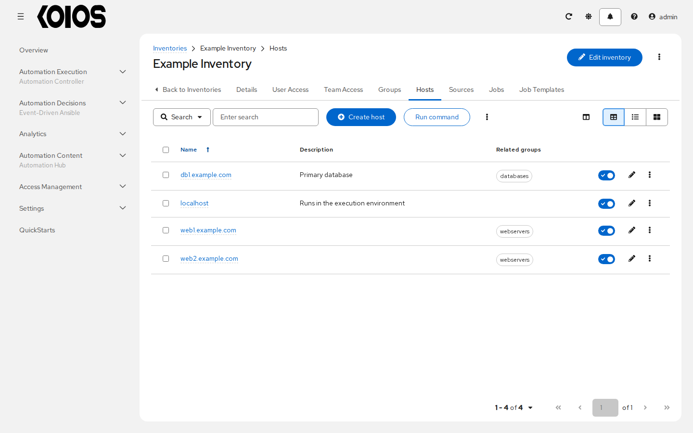
If you chose to add an existing host, the available hosts appear in the Select host window. Select one or more and click Add hosts.
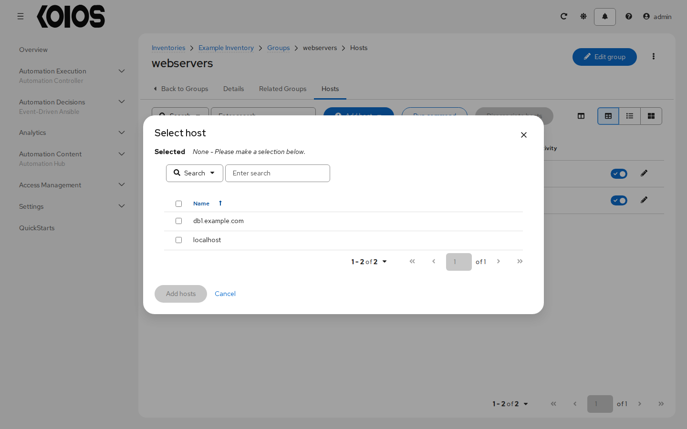
To remove hosts from a group without deleting them, select them in the Hosts tab of the group and click Disassociate hosts.
Note
You may also run ad hoc commands from this screen. Refer to Running Ad Hoc Commands for more detail.
Click the name of a host to open it. The Details tab shows its inventory and variables; Host enabled and Edit host are at the top.
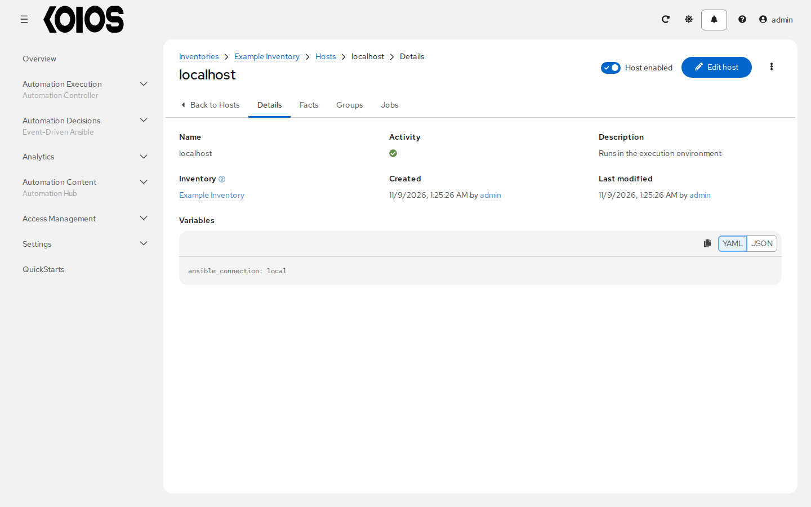
The Facts tab shows the facts stored for the host by the job templates that use the fact cache.
The Groups tab lists the groups of the host. Click Associate group to add the host to existing groups: select them in the Select groups window and click Confirm.
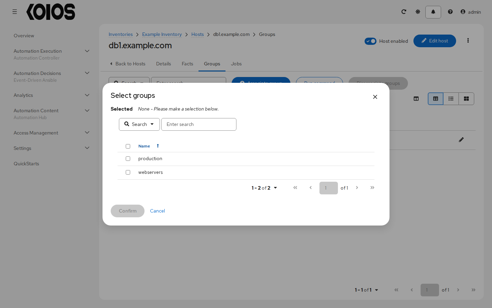
If a host was used to run a job, the Jobs tab of the host lists those jobs. Expand a row to see more details, or click the job to open its output.
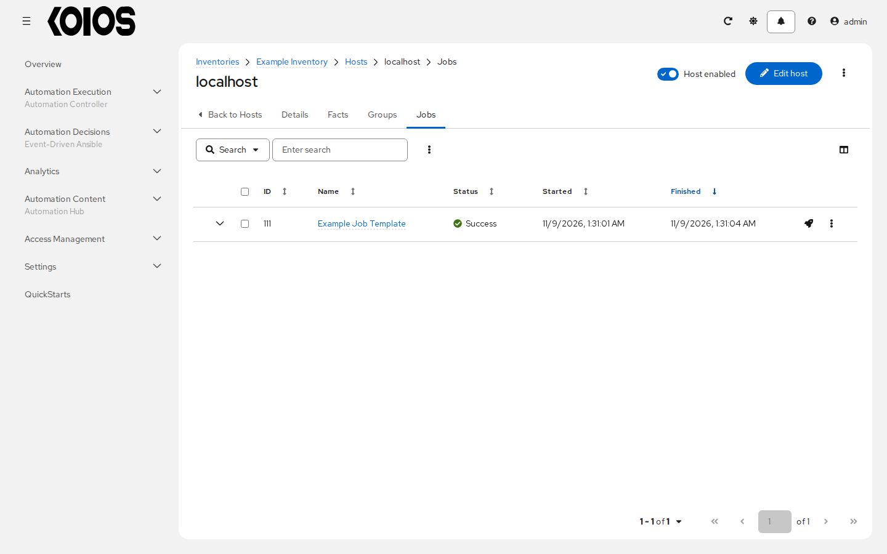
Note
You may create hosts in bulk using the endpoint /api/controller/v2/bulk/host_create/ of the API. This endpoint accepts JSON and you can specify the target inventory and a list of hosts to add to the inventory. These hosts must be unique within the inventory. Either all hosts are added, or an error is returned indicating why the operation was not able to complete. Use the OPTIONS request to return relevant schema. /api/controller/v2/bulk/host_delete/ deletes hosts in bulk.
16.4.4. Add source
Inventory sources are not associated with groups. Spawned groups are top-level and may still have child groups, and all of these spawned groups may have hosts. Adding a source to an inventory only applies to standard inventories. Smart inventories inherit their source from the standard inventories they are associated with. To configure the source for the inventory:
In the inventory you want to add a source, click the Sources tab.
Click Create source.
This opens the Create source form.
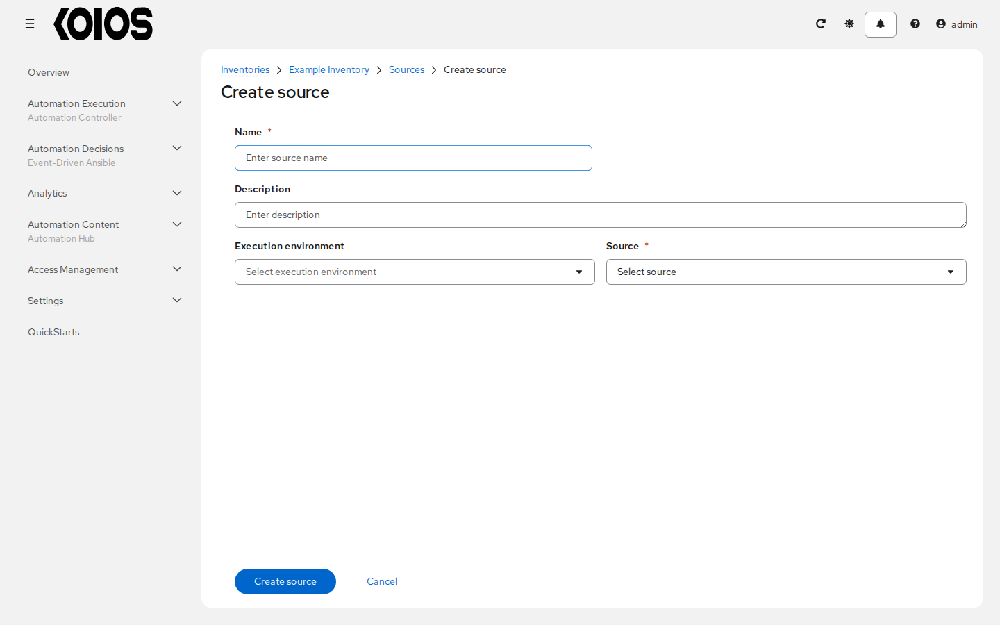
Enter the appropriate details into the required and optional fields:
Name: Required
Description: Enter an arbitrary description as appropriate (optional)
Execution environment: Optionally select the execution environment with which you want to run your inventory imports. Refer to the Execution Environments section for details on building an execution environment.
Source: Choose a source for your inventory. Refer to the Inventory Sources section for more information about each source and details for entering the appropriate information.
After completing the required information for your chosen inventory source, you can continue to optionally specify other common parameters, such as verbosity, host filters, and variables.
Select the appropriate level of output on any inventory source’s update jobs from the Verbosity drop-down menu.
Use the Host filter field to specify only matching host names to be imported into automation controller.
In the Enabled variable, specify automation controller to retrieve the enabled state from the given dictionary of host variables. The enabled variable may be specified using dot notation as ‘foo.bar’, in which case the lookup will traverse into nested dicts, equivalent to:
from_dict.get('foo', {}).get('bar', default).If you specified a dictionary of host variables in the Enabled variable field, you can provide a value to enable on import in Enabled value. For example, if
enabled_var='status.power_state'andenabled_value='powered_on'with the following host variables, the host would be marked enabled:
{ "status": { "power_state": "powered_on", "created": "2020-08-04T18:13:04+00:00", "healthy": true }, "name": "foobar", "ip_address": "192.168.2.1" }If
power_statewere any value other thanpowered_on, then the host would be disabled when imported into automation controller. If the key is not found, an existing host keeps its current state and a new host is created enabled.
All inventory sources have the following update options:
Overwrite: If checked, any hosts and groups that were previously present on the external source but are now removed, will be removed from automation controller inventory. Hosts and groups that were not managed by the inventory source will be promoted to the next manually created group, or if there is no manually created group to promote them into, they will be left in the “all” default group for the inventory.
When not checked, local child hosts and groups not found on the external source will remain untouched by the inventory update process.
Overwrite variables: If checked, all variables for child groups and hosts will be removed and replaced by those found on the external source. Inventory variables this source added on an earlier sync (for example from a
group_vars/all.ymlfile) are removed once the source no longer provides them, unless they were edited since or another source of this inventory still provides them. When not checked, a merge will be performed, combining local variables with those found on the external source.Update on launch: Each time a job runs using this inventory, refresh the inventory from the selected source before executing job tasks. To avoid job overflows if jobs are spawned faster than the inventory can sync, selecting this allows you to configure a Cache timeout (seconds) to cache prior inventory syncs for a certain number of seconds.
The “Update on launch” setting refers to a dependency system for projects and inventory, and it will not specifically exclude two jobs from running at the same time. If a cache timeout is specified, then the dependencies for the second job is created and it uses the project and inventory update that the first job spawned. Both jobs then wait for that project and/or inventory update to finish before proceeding. If they are different job templates, they can then both start and run at the same time, if the system has the capacity to do so. If you intend to use automation controller’s provisioning callback feature with a dynamic inventory source, Update on launch should be set for the inventory source.
If you sync an inventory source that uses a project that has Update revision on launch set, then the project may automatically update (according to cache timeout rules) before the inventory update starts.
You can create a job template that uses an inventory that sources from the same project that the template uses. In this case, the project will update and then the inventory will update (if updates are not already in-progress, or if the cache timeout has not already expired).
Use the Source variables field to override the variables of the inventory plugin, in YAML or JSON.
Review your entries and selections and click Create source when done.
The source opens with its Details, Schedules and Notifications tabs. Sync inventory source runs an update of this source.
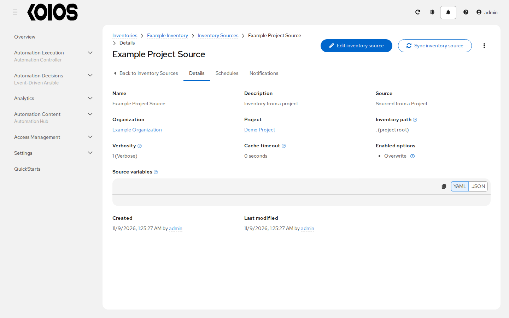
To configure schedules associated with this inventory source, click the Schedules tab. Refer to Schedules for more information.
To configure notifications for the source, click the Notifications tab and use the toggles to enable or disable the notifications to use with your particular source. For more detail, see Enable and Disable Notifications; to create notifiers, refer to Notifications.
Once a source is defined, it displays as an entry in the Sources tab of the inventory. From there you can sync a single source with its sync button, or all of them at once with Sync inventory sources in the toolbar menu. You can also edit or delete a source.
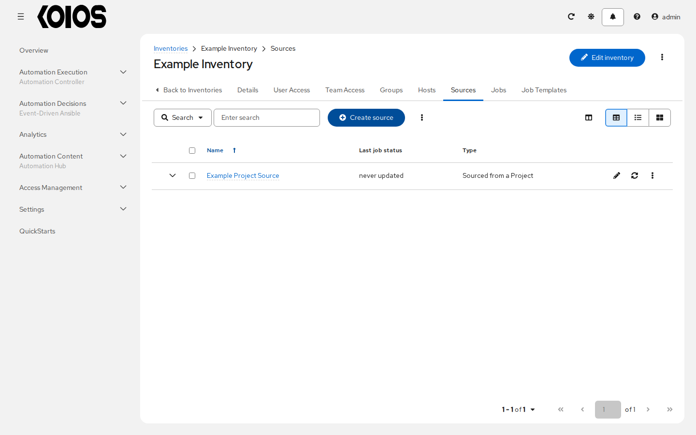
16.4.4.1. Inventory Sources
Choose a source which matches the inventory type against which a host can be entered:
16.4.4.1.1. Sourced from a Project
An inventory that is sourced from a project reads an inventory file, directory or script from the content of that project, which automation controller gets from its source control.
To configure a project-sourced inventory, select Sourced from a Project from the Source field.
The Source Details section shows additional fields. Enter the following details:
Credential: Optionally specify a cloud or Kubernetes credential whose values the inventory file or script needs.
Project: Required. Select the project this inventory is using as its source.
Source control branch: Optionally enter the branch, tag or commit to check out. It only displays if the selected project has the Allow branch override option checked. If left blank, the default branch of the project is used.
Inventory path: Required. Select an inventory file of the project, or
. (project root). If not already listed, you can type it into the field. In addition to a flat file inventory, you can point to a directory or an inventory script.
You can optionally specify the verbosity, host filter, enabled variable/value, and update options as described in the main procedure for adding a source.
Use Source variables to pass environment variables to an inventory script; you may also place inventory scripts in source control and then run it from a project. See Inventory File Importing in the Administration Guide for detail.
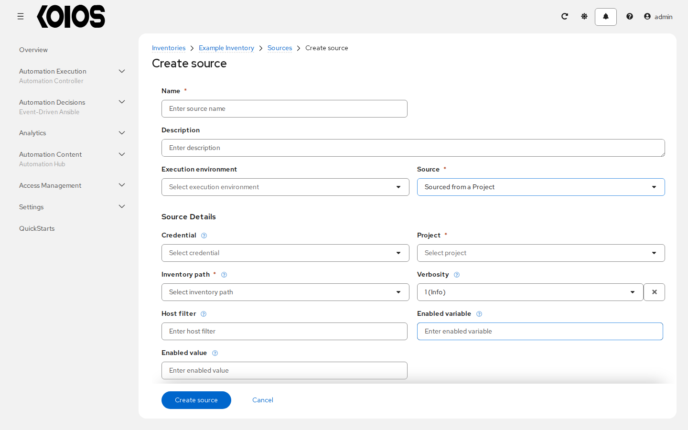
Note
If you are executing a custom inventory script from source control, please make sure you set the execution bit (i.e. chmod +x) on the script in your upstream source control. If you do not, automation controller will throw a [Errno 13] Permission denied error upon execution.
16.4.4.1.2. Amazon EC2
To configure an AWS EC2-sourced inventory, select Amazon EC2 from the Source field.
The Credential field is optional for this source and lists Amazon Web Services credentials. Without a credential, the plugin uses the AWS credentials available where the update runs; for example, the IAM role of the instance, when the execution node is an EC2 instance with an assigned IAM role. For more information on using IAM Roles, refer to the IAM roles for Amazon EC2 documentation.
You can optionally specify the verbosity, host filter, enabled variable/value, and update options as described in the main procedure for adding a source.
Use the Source variables field to override variables used by the
aws_ec2inventory plugin. Enter variables using either JSON or YAML syntax. For a detailed description of these variables, view the aws_ec2 inventory plugin documentation.
Note
If you only use include_filters, the AWS plugin always returns all the hosts. To use this properly, the first condition on the or must be on filters and then build the rest of the OR conditions on a list of include_filters.
16.4.4.1.3. OpenShift Virtualization
This source imports the virtual machines of OpenShift Virtualization (KubeVirt) with the kubevirt.core.kubevirt inventory plugin.
Select Supported OpenShift Virtualization from the Source field.
In Credential, choose an OpenShift or Kubernetes API Bearer Token credential (required); see Credentials.
You can optionally specify the verbosity, host filter, enabled variable/value, and update options as described in the main procedure for adding a source.
Use the Source variables field to set the options of the plugin, for example the namespaces to read. The execution environment must include the
kubevirt.corecollection.
16.4.4.1.4. Red Hat Ansible Automation Platform
This source imports an inventory of another automation controller with the awx.awx.tower inventory plugin.
To configure this type of sourced inventory, select Supported Red Hat Ansible Automation Platform from the Source field.
In Credential, choose a Red Hat Ansible Automation Platform credential (required) with the address and credentials of the other platform. For more information, refer to Credentials.
You can optionally specify the verbosity, host filter, enabled variable/value, and update options as described in the main procedure for adding a source.
Use the Source variables field to override variables used by the
awx.awx.towerinventory plugin, for example theinventory_idof the inventory to import. Enter variables using either JSON or YAML syntax.
16.4.4.1.5. Terraform State
This inventory source uses the terraform_state inventory plugin from the cloud.terraform collection. The plugin will parse a terraform state file and add hosts for AWS EC2, GCE, and Azure instances.
To configure this type of sourced inventory, select Terraform State from the Source field.
The optional Credential field lists Terraform backend configuration credentials. Select one when the backend needs authentication or other backend settings.
You can optionally specify the verbosity, host filter, enabled variable/value, and update options as described in the main procedure for adding a source. For Terraform, enable Overwrite and Update on launch options.
Use the Source variables field to override variables used by the
terraforminventory plugin. Enter variables using either JSON or YAML syntax. For more information on these variables, see the terraform_state file for detail.
The
backend_typevariable is required by the Terraform state inventory plugin. Here is an example for an Amazon S3 backend:--- backend_type: s3
Select in the Execution environment field (required for this source) an execution environment that contains a Terraform binary. This is required for the inventory plugin to run the Terraform commands that read inventory data from the Terraform state file. Refer to the Terraform EE readme that contains an example execution environment configuration with a Terraform binary.
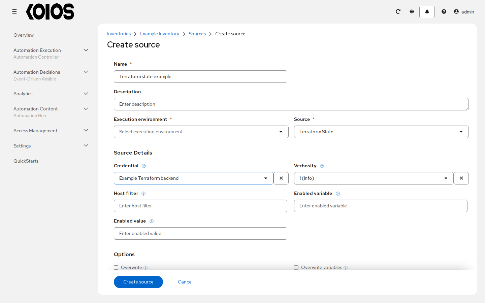
To add hosts for AWS EC2, GCE, and Azure instances, the Terraform state file in the backend must contain state for resources already deployed to EC2, GCE, or Azure. Refer to each of the Terraform providers’ respective documentation to provision instances.
16.4.4.1.6. Additional cloud and virtualization sources
The following sources are available with their managed credentials in Koios Automation Platform 2026.11.8. In Automation Execution > Infrastructure > Inventories, open a standard inventory, select Sources, then click Create source. Enter Name, select Source and the matching Credential, and optionally select an Execution environment containing the inventory plugin and its dependencies. Source variables accepts YAML or JSON plugin options. Review the common update options, click Create source, then Sync inventory source to import hosts and groups. Saving a source does not prove that its remote service is reachable or that its credentials have sufficient permissions.
16.4.4.1.7. Google Compute Engine
Select Google Compute Engine in Source.
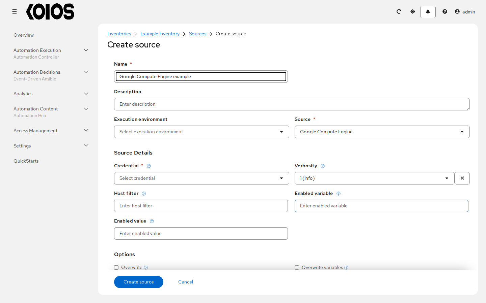
In Credential (required), select a Google Compute Engine credential.
The source uses
google.cloud.gcp_compute. Ensure that the selected EE includes the corresponding collection and its dependencies.Set the GCP project and other discovery options in Source variables as needed. Use a service account authorized to list the target resources.
Finish the common fields and sync the source as described above.
16.4.4.1.8. Microsoft Azure Resource Manager
Select Microsoft Azure Resource Manager in Source.
In Credential (required), select a Microsoft Azure Resource Manager credential.
The source uses
azure.azcollection.azure_rm. Ensure that the selected EE includes the corresponding collection and its dependencies.Use Source variables to select discovery options supported by the Azure inventory plugin. The account must have access to the subscription and resources being imported.
Finish the common fields and sync the source as described above.
16.4.4.1.9. VMware vCenter
Select VMware vCenter in Source.
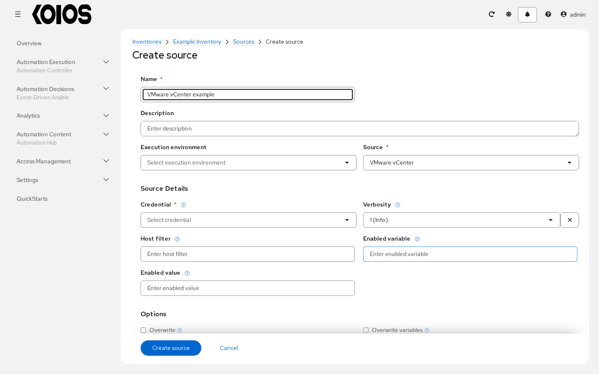
In Credential (required), select a VMware vCenter credential.
The source uses
community.vmware.vmware_vm_inventory. Ensure that the selected EE includes the corresponding collection and its dependencies.Use Source variables to select VMware properties, filters, groups and certificate-validation options supported by the inventory plugin.
Finish the common fields and sync the source as described above.
16.4.4.1.10. VMware ESXi
Select VMware ESXi in Source.
In Credential (required), select a VMware vCenter credential.
Ensure that the selected EE includes the VMware ESXi inventory plugin and its dependencies.
Select a VMware vCenter credential whose VCenter Host is the ESXi endpoint. There is no separate ESXi credential type. Use Source variables for the options accepted by the ESXi inventory plugin in the selected EE.
Finish the common fields and sync the source as described above.
16.4.4.1.11. Red Hat Satellite 6
Select Supported Red Hat Satellite 6 in Source.
In Credential (required), select a Red Hat Satellite 6 credential.
The source uses
theforeman.foreman.foreman. Ensure that the selected EE includes the corresponding collection and its dependencies.Use Source variables for Foreman/Satellite discovery and grouping options. If expected related groups are missing, check the plugin configuration and the account’s access to the Satellite resources.
Finish the common fields and sync the source as described above.
16.4.4.1.12. OpenStack
Select OpenStack in Source.
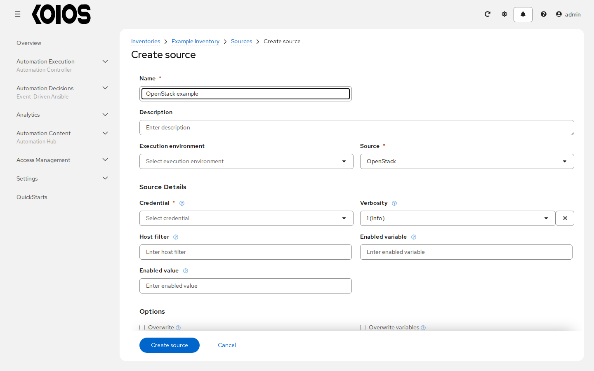
In Credential (required), select a OpenStack credential.
The source uses
openstack.cloud.openstack. Ensure that the selected EE includes the corresponding collection and its dependencies.The managed credential exposes username/password authentication and project/domain/region settings; it does not expose Keystone application-credential fields. Configure discovery options in Source variables.
Finish the common fields and sync the source as described above.
16.4.4.1.13. Red Hat Virtualization
Select Supported Red Hat Virtualization in Source.
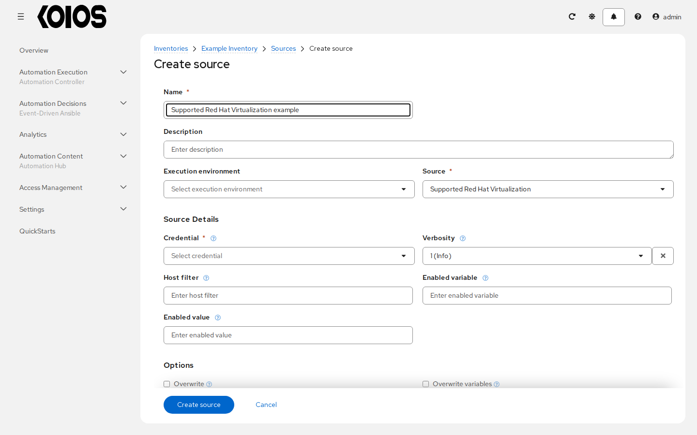
In Credential (required), select a Red Hat Virtualization credential.
The source uses
ovirt.ovirt.ovirt. Ensure that the selected EE includes the corresponding collection and its dependencies.If the credential specifies CA File, make that path available inside the inventory update EE. Configure discovery options in Source variables.
Finish the common fields and sync the source as described above.
16.4.4.1.14. Red Hat Insights
Select Supported Red Hat Insights in Source.
In Credential (required), select a Insights credential.
The source uses
redhatinsights.insights.insights. Ensure that the selected EE includes the corresponding collection and its dependencies.Use an Insights credential with the authentication values needed by the Insights service. Configure discovery and grouping options in Source variables.
Finish the common fields and sync the source as described above.
16.4.4.2. Export old inventory scripts
Despite the removal of the custom inventory scripts API, the scripts are still saved in the database of an installation that had them, for example after migrating from an old version. The awx-manage export_custom_scripts command recovers them in a format that is suitable for you to subsequently check into source control. Run it in the task container of automation controller and copy the file out of the pod:
Choose one task pod and use it in both commands, since the file is written inside that pod:
$ POD=$(kubectl get pods -n <namespace> -l app.kubernetes.io/name=<platform>-controller-task -o name | head -1)
$ kubectl exec -n <namespace> $POD -c <platform>-controller-task -- \
awx-manage export_custom_scripts --filename=/tmp/my_scripts.tar
Dump of old custom inventory scripts at /tmp/my_scripts.tar
$ kubectl cp -n <namespace> -c <platform>-controller-task ${POD#pod/}:/tmp/my_scripts.tar my_scripts.tar
Making use of the output:
$ mkdir my_scripts
$ tar -xf my_scripts.tar -C my_scripts
The naming of the scripts is _<pk>__<name>. This is the naming scheme used for project folders.
$ ls my_scripts
_10__inventory_script_rawhook _19__ _30__inventory_script_listenhospital
_11__inventory_script_upperorder _1__inventory_script_commercialinternet45 _4__inventory_script_whitestring
_12__inventory_script_eastplant _22__inventory_script_pinexchange _5__inventory_script_literaturepossession
_13__inventory_script_governmentculture _23__inventory_script_brainluck _6__inventory_script_opportunitytelephone
_14__inventory_script_bottomguess _25__inventory_script_buyerleague _7__inventory_script_letjury
_15__inventory_script_wallisland _26__inventory_script_lifesport _8__random_inventory_script_
_16__inventory_script_wallisland _27__inventory_script_exchangesomewhere _9__random_inventory_script_
_17__inventory_script_bidstory _28__inventory_script_boxchild
_18__p _29__inventory_script_wearstress
Each file contains a script. Scripts can be bash/python/ruby/more, so the extension is not included. They are all directly executable (assuming the scripts worked). If you execute the script, it dumps the inventory data.
$ ./my_scripts/_11__inventory_script_upperorder
{"group_𐒰숎笎𗏫넫듐髆𗬇濹셻": {"hosts":
["host_𘒭梶穑鎴槏쏂𗶾𘂒ㅃ拇",
"host_恗㦅ὠﻻᬢ봭ꤌ𖡩ፄ鴕",
"host_碠𘋳鉞槚ꕉ𓉾𗢑𒇑埖𐙗",
"host_𞠭ퟷꆊ瞚𐎋礃𘊭䅔𒈕霑",
"host_ᢡ鵯ࢬ瓂哢琎异𗗮ﯖ䔆"], "vars": {"ansible_host": "127.0.0.1", "ansible_connection":
"local"}}}
You can verify functionality with ansible-inventory. This should give the same data, but reformatted.
$ ansible-inventory -i ./my_scripts/_11__inventory_script_upperorder --list --export
In the above example, you could cd into my_scripts and then issue a git init command, add the scripts you want, push it to source control, and then create an inventory source sourced from a project in the automation controller user interface.
For more information on syncing or using custom inventory scripts, refer to Inventory File Importing in the Administration Guide.
16.4.5. View completed jobs
If an inventory was used to run a job, the Jobs tab of the inventory lists those jobs, including ad hoc commands. Expand a row to see more details, or click the job to open its output.
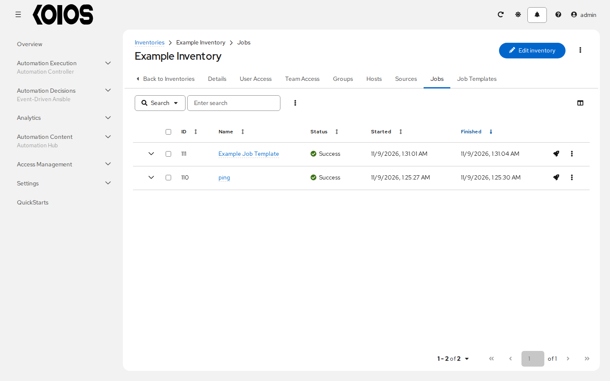
The Job Templates tab lists the job templates that use the inventory.
16.5. Running Ad Hoc Commands
To run an ad hoc command:
Open the Hosts or Groups tab of the inventory, or the Hosts tab of a group. Optionally select the hosts or groups to target; otherwise the command targets all the hosts of the inventory.
Click Run command.
The Run command wizard opens.
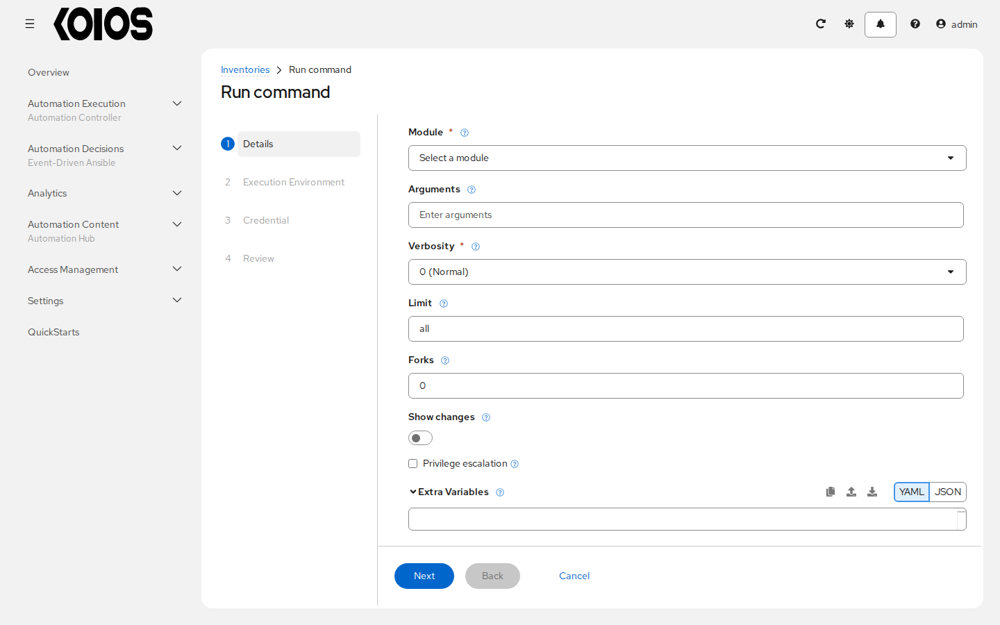
Enter the details for the following fields:
Module: Select one of the modules that automation controller supports running commands against. The list comes from the
AD_HOC_COMMANDSsetting of automation controller; by default:command
apt_repository
mount
win_service
shell
apt_rpm
ping
win_updates
yum
service
selinux
win_group
apt
group
setup
win_user
apt_key
user
win_ping
Arguments: Provide arguments to be used with the module you selected.
Verbosity: Select a verbosity level for the standard output.
Limit: Enter the limit used to target hosts in the inventory. To target all hosts in the inventory enter
allor*, or leave the field blank. This is automatically populated with whatever was selected in the previous view prior to clicking Run command.Forks: If needed, select the number of parallel or simultaneous processes to use while executing the command.
Show changes: Select to enable the display of Ansible changes in the standard output. The default is off.
Privilege escalation: If enabled, the command is run with administrator privileges. This is the equivalent of passing the
--becomeoption to theansiblecommand.Extra Variables: Provide extra command line variables to be applied when running this inventory. Enter variables using either JSON or YAML syntax.
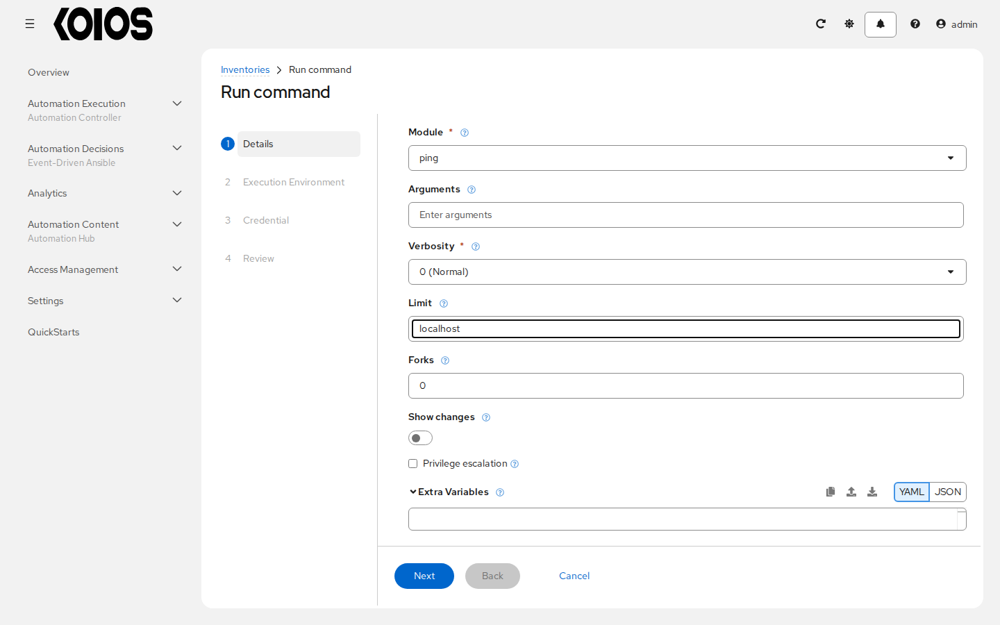
Click Next to choose the execution environment you want the ad-hoc command to be run against. If you leave it empty, the default execution environment is used.
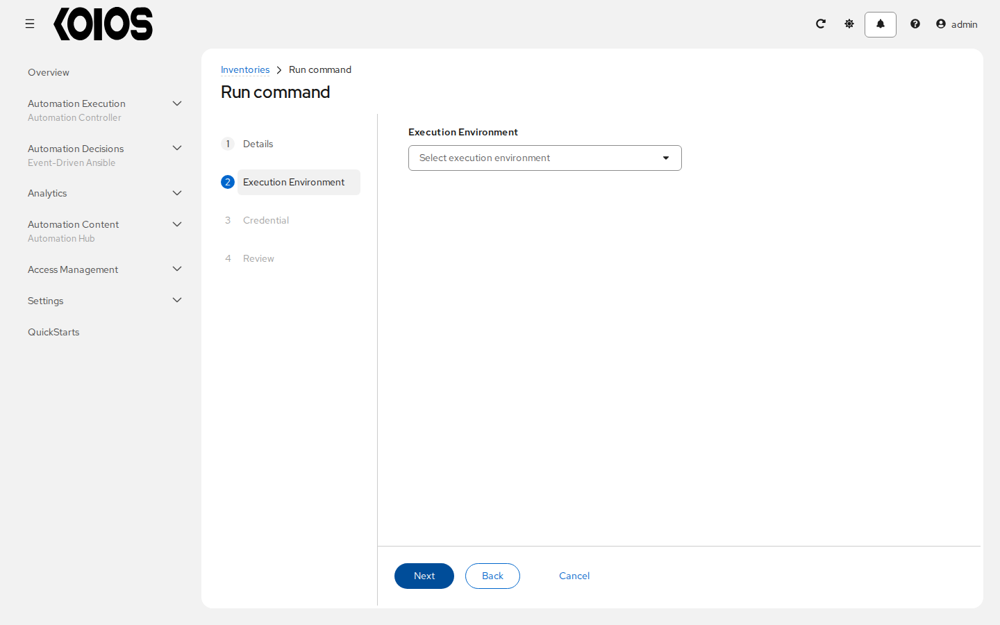
Click Next to choose the credential to use when accessing the remote hosts: the machine credential with the user name and the SSH key or password that Ansible needs to log into them. If the credential asks for passwords at launch, the Credential Passwords step requests them.
Review the command in the Review step and click Finish to launch it.
The results display in the Output tab of the job.
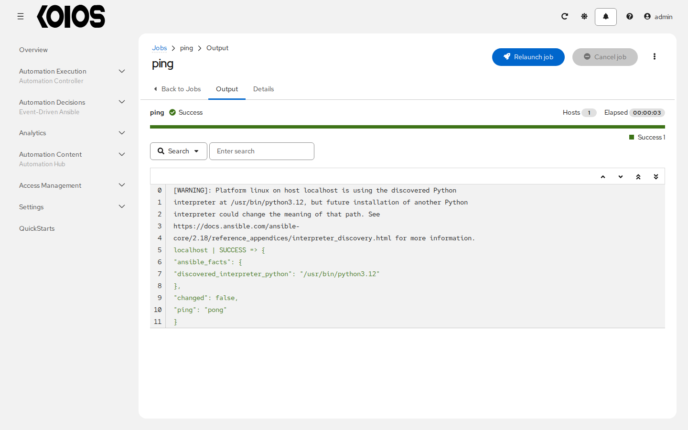